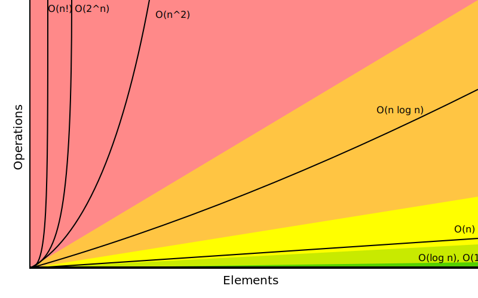

What this workshop is
- An intro into Performance thinking
- An attempt at understanding the machine we program on
- Some lesser know tricks
- A workshop. You gonna have to work for it.
What this workshop is not
- An exhausting list of tricks
- A lecture on algorithm and data structures - pick a book.
- Something you just listen and it clicks
- Application specific performance tips (Networking, SQL, ...)
You need to experiment yourself
We will write our own little databases in this workshop.
- You can group up or do it on our own if you must.
- You can also use your favourite programming language.
- You can always ask me outside the workshop when writing it.
TODO: Move the explanation of LSM dbs to intro and re-order io and cpu?
What is performance optimization?
TODO: Wikipedia.
Optimizing different metrics that
When to apply it?
- Probably more often than you do now.
- Whenever your performance requirements are not fulfilled.
Wait, there are requirements?
How to figure out performance criteria?
Well, that's your job mostly. Your PM won't tell you most of the time. But they will help you to get the requirements.
Ask those questions:
- On what kind of system the software will run on?
- How many users will there be in parallel?
- What kind of latency is the user willing to accept? (games, websites, ATMs)
- How much scaling is expected in the next time?
- Will my technology choice be a bottleneck? (Electron)
- Do edge cases need to perform well?
- Are the optimizations worth the risk/effort?
- ...
Do some basic calculations based on these and add X to your goals.
Do not ask: How fast could this be? (that's a fine question for personal learning though, but not when you get paid for delivering value to a company ;-))
After this workshop you should be able to onvert the answers to those questions to measurable numbers.
Edgecases are a good point: Sometimes performance is only bad in certain cases. Ask your PM if those are important for your business. If it's a open source library, probably fix those edge cases too.
When not to apply it?
about, the speed of noncritical parts of their programs, and these attempts at
efficiency actually have a strong negative impact when debugging and
maintenance are considered. We should forget about small efficiencies, say
about 97% of the time: premature optimization is the root of all evil. Yet we
should not pass up our opportunities in that critical 3%."
-- Donald Knuth
If you don't have a problem you really should not do anything. It is difficult to define what a "problem" is. Electron apparently defined that it's not a problem if low-memory devices can't use their framework.
How do I know if it's premature?

Remember: It does not matter you fast you compute a wrong result.
The main point is: Take your time to do things the right away. Don't drop the pen when it worked for the first time and didn't feel slow, really take some to measure.
However, don't just blindly optimize things before you measured or optimize the small things after measuring.
Optimizations come at a price. It's usually more and harder code to maintain (and if not, why didn't you do it in the first place?) or they have some other disadavntages (an index in a database for example slows drown writes and needs space!). Is it worth the risk?
How do I measure?
Via automated benchmarks.
The how will be shown
How do I know how to optimize?
No short answer and no shortcuts to this. It will be a long journey and this is workshop will be only a step on the journey.
Very many different languages, OS (Python, Go) and many different applications (SQL - 90%: just add an index) that cannot all be covered.
But there are some common basics and more importantly a commone thinking behind all of it. And that is: You have to understand what your program is doing to optimize it.
In a nutshell: Go from big to small
Algorithm for optimizing a correct program:
- Do the obvious things right away. ("obvious" depends a lot on experience)
- Check if your requirements are met. If you don't have concrete performance requirements, make some.
- Benchmark to find the biggest bottlenecks regarding performance (we are incredible bad at guessing! Never skip this step)
- Optimize biggest offender found and repeat from step 1.
Never mix up this order.
What is this program doing?
import sys print(sys.stdin.readline().strip())
Interpreted -> compiled to byte code. sys.stdin.readline are two dict lookups. memory allocations file I/O from stdin to stdout calling a c function (strip) unicode conversion!
Inside Python
All functions eventuall call functions implemented in C:
static PyObject * strip(PyObject *self, PyObject *args) { char *s = NULL; if (!PyArg_ParseTuple(args, "s", &s)) { return NULL; } return PyUnicode_FromString(s); }
And that happens for every function call in Python. Very often. All those objects are allocated on the heap. Python is easy, but the price you pay for it is high. This might give you a first feeling on how much stuff happens in a simple program.
Printing to stdout and drawing something on the screen is insanely complex too and beyond this workshop.
A word on interpreted languages
TODO: needed?
- Many things in this workshop do not apply to you 1:1.
- If you follow this workshop, a compiled language helps.
- TODO
Maybe some day you have to extend your language with a C module?
Theory: Complexity
- Data structures and algorithms can be divided in performance classes.
- General types are space and time complexity.
- Often also divided in worst case, best case, average case and specific operations.
- Complexity classes are given in Big-O notation.
Theory: Big-O Notation
www.bigocheatsheet.com
O(1) -> constant O(n) -> linear O(log n) -> logarithmic O(n * log n) -> sorting O(n ** x) -> polynomial O(x ** n) -> exponential O(n!) -> fucktorial (oops, typo)
Data structures and algorithms:
-> Some have better space / time complexity. -> Most have tradeoffs, only few are universally useful like arrays / hash tables -> Some are probalibisitic: i.e. they save you work or space at the expense of accuracy (bloom filters) -> Difference between O(log n) and O(1) is not important most of the time. (database developers might disagree here though)
Complexity examples
- Time complexity of bubble sort?
- Time complexity of binary search (worst + best)?
- Space complexity of merge sort vs quick sort?
- Removing an element from an array vs from a linked list?
- Best case / Worst case time complexity of get and set of a hash table?
- Space complexity of a hash map?
n**2 log2 n n vs 1 n vs 1 1 and 1 (but much more expensive than an array index) n
Makes you wonder why you don't use hash maps all the time? Indeed they are a wonderful invention, but:
- get is still much more expensive than an array index.
- collisions can happen, making things inefficient.
- range queries and sorting are impossible.
- self balancing trees have O(log n) for get/set but are stable.
Data structures in this workshop
This was it all. Go pick a book or course.
Data structures and algorithms is something you gonna have to learn yourself. Would totally go over the scope of this workshop and does not work as frontal lecture.
Do not ignore primitive algorithms like bubble sort. Remember: Fancy algorithms are slow when n is small, and n is usually small.
Benchmarking
Tests that measure performance requirements.
- Heavily tied to hardware.
- Requires
What are possible performance metrics?
Collect possible performance metrics (unit in parans):
- Execution time (time, cpu cycles)
- Latency (time)
- Throughput (IO, bytes/sec)
- Memory (allocations, peak, total bytes)
Humans are bad at magnitudes
https://colin-scott.github.io/personal_website/research/interactive_latency.html
In general:
- CPU < Memory < Files < Network.
Optimize in that order.
Profiling
Profiling is like benchmarking, but just once.
Profiling is usually used for finding a bottleneck, but you benchmark a program as part of it.
So most of the time the terms can be used interchangeably.
Benchmarking and Statistics
$ hyperfine
- Run several times.
- If the variance is not big, take the maximum.
- If the variance is rather large, use min...max.
Benchmarking and CI/CD
https://github.com/dandavison/chronologer
In an ideal world, performance requirements are tested just like normal functional requirements.
Challenges:
- Different machines that benchmarks run on.
- Only comparison between releases makes sense.
Makes sense only for big projects. Many projects have their own set of scripts to do this. I'm not aware of a standard solution.
Workshop Project
“What I cannot create, I do not understand”.
-- Richard Feynman
Words don't cut it. To understand something you have to lay your hands on something and start exploring. Workshop is about tacit knowledge, you have to connect the little dots on my slides by working on this small slide project. I can only show you things, not understand and learn it for you.
tacit = unausgeprochen
KV Store: Memory only
type KV map[string][]byte func (kv *KV) sync() { var b bytes.Buffer{} for k, v := range kv { b.WriteString(fmt.Sprintf("%s=%s\n", k, v)) } return ioutil.WriteFile("/blah", 0644, b.Bytes()) }
You could use a bigh in-memory hash table and sync that to disk sometimes.
When do you call sync()? After every write? Inefficient. Less often? Then you will suffer data loss on power loss or crash.
Sounds impractical, but surprise: Redis actually works this way. They do not use a hash map internally though, but a tree structure as index. Oh, and they perform most work in a single thread. Still fast.
KV Store: Append only
set() { printf "%s=%s\n" "$1" "$2" >> ./db } get() { grep "^$1=" ./db | tail -1 | cut -d= -f2- }
Simple append only write, get reads only the last value. Every update of an existing key writes it again.
Terribly slow because get needs to scan the whole db, but very easy to implement and set is pretty fast. If you hardly ever call get then this might be a viable solution.
KV Store: Indexed
type KV map[string]int64 func (kv *KV) Get(key string) []byte { // 1. Get & seek to offset // 2. Read value from db file. } func (kv *KV) Set(key string, val []byte) { // 1. Check size of db file. // 2. Append value to file with offset equal to db size // 3. Update kv index with new offset. }
This is actually already quite nice!
This approach is called "log structured", because values are handled like a stream of logs, just timestamped (or offset stamped) data.
We can handle any number of values as long as we do not run out of memory. If we throw in a little caching, we could probably get decent performance. This would also be a decent usage for something called mmap which we will look into later in this series.
When loading the db file, we can reconstruct the index map easily.
Problems:
- There will be many duplicates if we update the same keys over and over.
- The database file will grow without bound. Might turn out problematic.
- There may only be one writer at a point (race condition between size of db and actual write).
KV Store: Segments
Solution:
- If the db file gets too big (> 32M), start a new one.
- Old one gets compacted in background (i.e. duplicates get removed)
- Index structure remembers what file we need to read.
TODO: Find good diagram.
The compaction step can be easily done in the background.
Open issues:
- We still need to have all keys in memory.
- Range queries are kinda impossible.
- We can't delete stuff.
KV Store: Deletion

When we want to delete something, we just write a special value that denotes that this key was deleted. If a tombstone is the last value then the key is gone. Compaction can use it to clean up old traces of that value.
At this point we already build a key value store that is used out there: Bitcask.
KV Store: Range queries
TODO: good diagram
Change approach quite a bit:
- Keep a batch of key-value pairs in memory, but sorted by key.
- If batch gets too big, then swap to disk.
- Keep every 100th key in the offset index.
- If key not in index, go to file and scan the range.
This technique is called a Log-Structured-Merge tree (LSM).
"tree" because usually a tree is used instead of a hash table for easy handling, but this is not strictly necessary and the main point of the concept.
Since the index can be "sparse" (not all keys need to be stored), we have very fine grained control over memory usage. Worst thing is a bit of extra scanning in the file.
Open problems:
- Get on non-existing keys.
- Crash safety
KV Store: WAL
What if a crash occurs before things get written to disk?
We have to use a WAL like above! On a crash we can reconstruct everything from it. Postgres and many other databases make use of this technique too.
KV Store: Fin
I left quite some details out, but that's something you should be able to figure out.